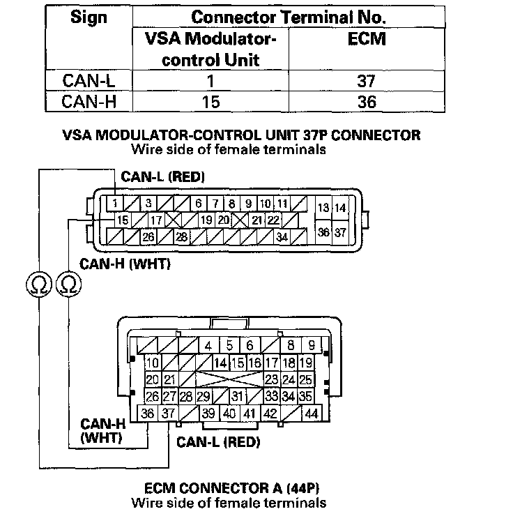

DTC 86-11
DTC 86-11: F-CAN Communication with ECM MalfunctionDTC 86-21: F-CAN Communication with Engine Malfunction
DTC 86-22: F-CAN Communication with Engine Malfunction
DTC 86-23: F-CAN Communication with Engine Malfunction
DTC 86-24: F-CAN Communication with Engine Malfunction
DTC 86-25: F-CAN Communication with Engine Malfunction
DTC 86-41: F-CAN Communication with EAT Malfunction
1. Turn the ignition switch ON (II).
2. Clear the DTC with the HDS.
3. Turn the ignition switch OFF.
4. Test-drive the vehicle. Drive the vehicle at 7 mph (10 km/h) or more.
5. Check for DTCs with the HDS.
Is 86-11, 86-21, 86-22, 86-23, 86-24, 86-25, and/or 86-41 DTC indicated?
YES - If the DTC 86-01 is indicated at the same time, do the DTC 86-01 troubleshooting. If 86-01 is not indicated, go to step 6.
NO - If any DTCs are indicated, go to the indicated DTCs troubleshooting. If DTCs are not indicated, intermittent failure, the system is OK at this time. Check for loose terminals between ECM connector A (44P) and the VSA modulator-control unit 37P connector. Refer to intermittent failures troubleshooting.
6. Turn the ignition switch OFF.
7. Short the SCS line with the HDS.
8. Disconnect ECM connector A (44P).
9. Disconnect the VSA modulator-control unit 37P connector.
10. Check for continuity between the VSA modulator-control unit 37P connector terminal and ECM connector A (44P) terminal (see table).

Is there continuity?
YES - Check for loose terminals in ECM connector A (44P) and at the VSA modulator-control unit 37P connector. If necessary, substitute a known-good ECM, then go to step 1 and recheck. If no DTCs are indicated, replace the original ECM. If DTCs are indicated, replace the VSA modulator-control unit.
NO - Repair open in the wire between the ECM and the VSA modulator-control unit.